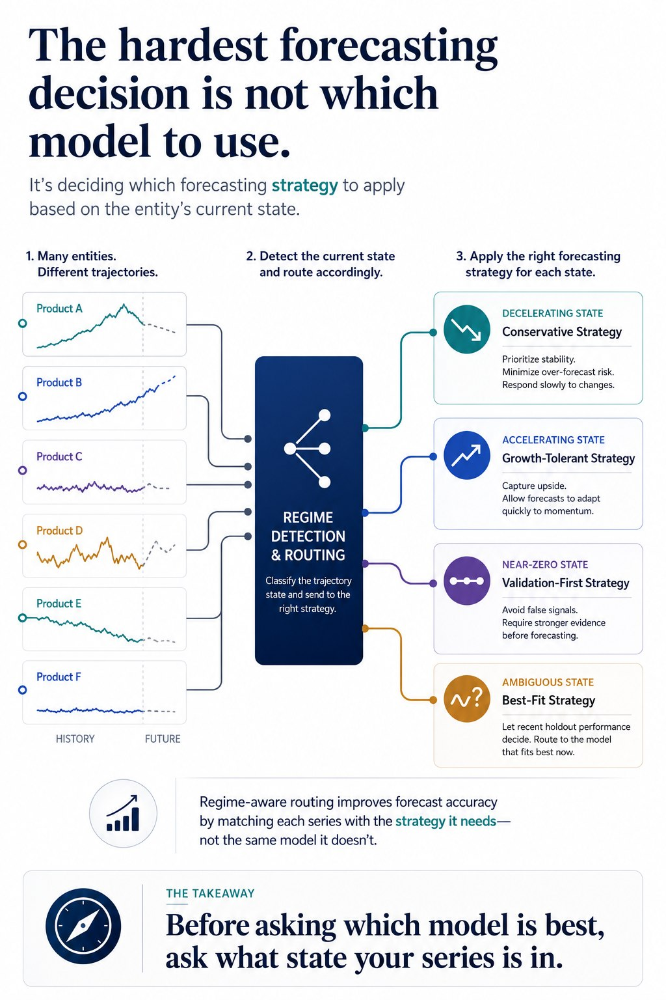

Overview
This project forecasts cumulative COVID-19 deaths across roughly 180 countries using a regime-aware time series pipeline. The central design decision was not to search for a single best forecasting model across all countries, but to first determine what type of trajectory each country was exhibiting.
Instead of applying one uniform forecasting logic to all entities, the pipeline built a lightweight routing layer based on recent death dynamics. Countries were classified into trajectory states such as DOWN, UP, NEAR_ZERO, and REST, then routed to different forecasting strategies with different model selection rules.
This shifted the architecture from pure model selection to state-aware forecasting design: before asking which model is best, the pipeline first asked what kind of forecasting problem each entity currently represented.
Architecture

📋 View detailed text-based architecture diagram
┌─────────────────────────────────────────────┐
│ Multi-Entity Time Series Input │
│ country-level cumulative & daily deaths │
└──────────────────────┬──────────────────────┘
│
▼
┌─────────────────────────────────────────────┐
│ Data Cleaning / Preprocessing │
│ - negative corrections -> 0 │
│ - trim leading zeros │
│ - fix repeated / missing reporting │
│ - smooth abnormal spikes │
└──────────────────────┬──────────────────────┘
│
▼
┌─────────────────────────────────────────────┐
│ Trajectory Signal Layer │
│ - elasticity from daily-death change │
│ - 10-day evolution summary │
│ - 6-day recent evolution summary │
└──────────────────────┬──────────────────────┘
│
▼
┌─────────────────────────────────────────────┐
│ Regime Detection / Routing │
│ DOWN | UP | NEAR_ZERO | REST │
└───────┬──────────────┬──────────────┬──────┘
│ │ │
▼ ▼ ▼
┌──────────────────┐ ┌──────────────────┐ ┌────────────────────┐
│ DOWN Strategy │ │ UP Strategy │ │ NEAR_ZERO Strategy │
│ damped / │ │ growth-tolerant │ │ simple models + │
│ conservative │ │ median selection │ │ short validation │
└────────┬─────────┘ └────────┬─────────┘ └─────────┬──────────┘
│ │ │
└──────────────┬─────┴──────────────┬──────┘
▼ ▼
┌─────────────────────────────────────┐
│ REST Strategy │
│ held-out validation across │
│ ETS / ARIMA / TBATS variants │
└────────────────┬────────────────────┘
│
▼
┌─────────────────────────────────────┐
│ Final Country Forecasts │
│ merged into submission pipeline │
└─────────────────────────────────────┘
The Core Idea
In heterogeneous forecasting systems, the main failure mode is often not the forecasting model itself, but the assumption that all entities should be handled with the same forecasting logic.
This project addressed that problem by inserting a routing layer before model selection. A lightweight trajectory signal was computed from recent changes in daily deaths, summarized across two windows:
- 10-day window: medium-term trajectory behavior
- 6-day window: more recent local regime behavior
Those signals were used to classify each country into a regime, and each regime was assigned a different forecasting philosophy rather than just a different model.
Routing Logic by Regime
DOWN
Countries showing deceleration were routed to conservative forecasting logic with damped ETS-style behavior and model selection biased toward lower cumulative outcomes.
UP
Countries with accelerating dynamics were routed to undamped growth-tolerant logic, with median prediction selection used for robustness against overly aggressive forecasts.
NEAR_ZERO
Countries with very limited signal were handled using short validation windows and simple fallback logic, avoiding overfit behavior on sparse data.
REST
Ambiguous or mixed-regime countries were routed to a validation-driven model selection stage across multiple ETS, ARIMA, and TBATS variants.
Data Quality Preprocessing Before Forecasting
Because epidemiological reporting was noisy and irregular, the pipeline included explicit preprocessing before model fitting:
- replace negative daily corrections with zero
- remove leading zero periods before first observed deaths
- repair suspicious repeated values likely caused by reporting delays
- smooth abnormal local spikes using threshold-based redistribution
- run some countries on multiple smoothed versions and compare outcomes
This preprocessing was not cosmetic. It directly affected the shape of the signal being passed into classical time series models.
Selected Code Snippets
1. Elasticity signal computation
series[, elasticity := {
prev_value <- shift(daily_change, 1L, fill = 0)
denominator <- fifelse(prev_value == 0, prev_value + 1, prev_value)
(daily_change - prev_value) / denominator
}]
# Clip elasticity to avoid extreme outliers distorting regime classification
series$elasticity <- pmin(pmax(series$elasticity, -40), 40)
jh$elas <- pmin(pmax(jh$elas, -40), 40)
2. Regime classification from 6-day and 10-day summaries
# DOWN regime: recent trajectory is decelerating
entities_down <- trajectory[
trajectory$recent_6d_trend <= 0 &
trajectory$recent_6d_change <= trajectory$medium_10d_change,
]$entity_id
# UP regime: recent trajectory is accelerating above a minimum signal threshold
entities_up <- trajectory[
trajectory$recent_6d_change > trajectory$medium_10d_change &
trajectory$daily_signal >= 10,
]$entity_id
# Ensure DOWN takes priority over UP in ambiguous cases
entities_up <- setdiff(entities_up, entities_down)
3. Spike smoothing logic
# Redistribute abnormal spikes by splitting them evenly across
# the spike day and the following day
smooth_abnormal_spikes <- function(series_df,
drop_threshold = 0.5,
rebound_multiplier = 2) {
for (i in 3:(nrow(series_df) - 1)) {
previous_value <- series_df$daily_change[[i - 1]] + 1
current_value <- series_df$daily_change[[i]]
next_value <- series_df$daily_change[[i + 1]]
# Detect spike pattern: sharp drop followed by sharp rebound
drop_ratio <- current_value / previous_value
rebound_ratio <- next_value / (current_value + 1)
if (drop_ratio < drop_threshold && rebound_ratio > rebound_multiplier) {
total_volume <- current_value + next_value
series_df$daily_change[[i]] <- round(total_volume / 2)
series_df$daily_change[[i + 1]] <- total_volume - series_df$daily_change[[i]]
}
}
series_df
}
4. Regime-specific forecast selection for DOWN countries
# For decelerating entities, select the model that produces
# the most conservative cumulative forecast
cumulative_totals <- sapply(candidate_forecasts, function(forecast) {
daily_predictions <- forecast$predicted_daily_change
sum(pmax(daily_predictions, 0))
})
# Pick the model with the lowest projected cumulative outcome
best_model_index <- which.min(cumulative_totals)
selected_forecast <- candidate_forecasts[[best_model_index]]
5. Validation-based selection for ambiguous countries
# For ambiguous entities, select the model with the lowest
# held-out MAE on the validation window
validation_errors <- sapply(candidate_results, function(forecast) {
predicted_cumulative <- convert_to_cumulative(
forecast$predicted_daily_change,
validation_series$cumulative_value[nrow(validation_series)]
)
predicted_aligned <- predicted_cumulative[
seq_len(min(length(predicted_cumulative), nrow(holdout_actuals)))
]
actual_aligned <- holdout_actuals$cumulative_value[seq_along(predicted_aligned)]
calculate_mae(actual_aligned, predicted_aligned)
})
best_model_index <- which.min(validation_errors)
Why this matters
- separates regime detection from model fitting
- avoids forcing one forecasting strategy on heterogeneous entities
- makes model selection conditional on series state
- improves robustness when entities live in structurally different phases
- generalizes beyond epidemiology to other multi-entity forecasting systems
Where this pattern generalizes
The same routing principle applies anywhere multiple entities evolve through different states:
- demand forecasting across product lifecycle phases
- churn prediction across customer maturity segments
- anomaly detection across sensor operating regimes
- risk forecasting across different process states
The reusable pattern is simple: before optimizing the learner, first identify the state of the problem being presented by each entity.
Key Takeaway
Before asking which model is best, ask what state the series is in.
In heterogeneous forecasting systems, the strongest design improvement may come from adding a routing layer before model selection.
Public Repository Scope
This public version shares the regime-aware forecasting architecture, selected trajectory analysis logic, preprocessing components, and project presentation. Competition data files are not included.